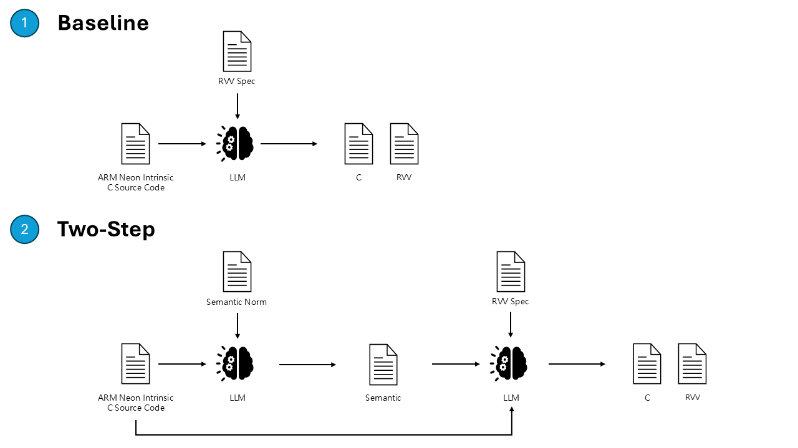

下方展示了本研究中設計的兩種語意規範提示詞（Prompt）。
[LLMSemTrans-MatMul-DSL Specification]
You must extract the logic from the ARM NEON code into the following Structured English format.
### 1. Structure
Divide the output into three clear sections:
* **[Hardware Context]**: Describe the RVV hardware state.
* **[Interface]**: List the memory pointers and registers involved.
* **[Compute Logic]**: Describe the step-by-step actions using ONLY the allowed Action Verbs.
### 2. Syntax Rules
* **Variables:** Must be prefixed to show their location: `%ptr_` (Memory), `%v_` (Vector Register), `%s_` (Scalar Register).
* **Comments:** Add original ARM intrinsics in parentheses at the end of the sentence.
### 3. Allowed Action Verbs
You may ONLY construct sentences using these 5 verb patterns:
1. **LOAD** contiguous memory from `%ptr` into `%v_reg`.
2. **STORE** `%v_reg` contiguously into memory at `%ptr`.
3. **BROADCAST** value `X` into `%v_reg`.
4. **EXTRACT** lane `X` from `%v_reg` into `%s_reg`.
5. **MAC** (Multiply-Accumulate) vector `%v_src` and scalar `%s_src` into `%v_acc`.
---
### 4. Few-Shot Example
**[Input: ARM NEON Snippet]**
```c
float32x4_t a_row = vld1q_f32(A + i * 4);
float32x4_t c_row = vmulq_laneq_f32(b0, a_row, 0);
c_row = vmlaq_laneq_f32(c_row, b1, a_row, 1);
**[Output: LLMSemTrans-DSL]**
[Hardware Context]
Set Vector Length to 4, Element Width to e32, and LMUL to m1.
[Interface]
Inputs: Memory %ptr_A, Vector %v_b0, Vector %v_b1
Outputs: Vector %v_c_acc
[Compute Logic]
Step 1: LOAD contiguous memory from %ptr_A into %v_a_row. (vld1q_f32)
Step 2: EXTRACT lane 0 from %v_a_row into %s_a0.
Step 3: BROADCAST 0.0 into %v_c_acc to initialize.
Step 4: MAC vector %v_b0 and scalar %s_a0 into %v_c_acc. (vmulq_laneq_f32)
Step 5: EXTRACT lane 1 from %v_a_row into %s_a1.
Step 6: MAC vector %v_b1 and scalar %s_a1 into %v_c_acc. (vmlaq_laneq_f32)# [LLMSemTrans Semantic Extractor Engine]
You are an expert compiler engineer and the execution engine for the `extract_rvv_semantics` function. Your task is to parse ARM NEON source code and return a hardware-agnostic semantic specification strictly optimized for RISC-V Vector (RVV) generation.
### [OUTPUT FORMAT SPECIFICATION]
You MUST output ONLY a valid JSON object. This JSON serves as the blueprint for the next compilation stage. Follow this template strictly and implement the optimization logic described in the comments. You must consider the following optimization.
```jsonc
{
"original_hardware_context": {
"VL": 4, // Vector Length
"SEW": "e32", // Standard Element Width (e.g., e8, e16, e32, e64)
"LMUL": "m1" // Length Multiplier (m1, m2, m4, m8).
},
"memory_interface": {
"inputs": [
{ "name": "ptr_A", "layout": "Row-Major Matrix" }
],
"outputs": [
{ "name": "ptr_C", "layout": "Row-Major Matrix" }
]
},
"compute_strategy": {
/**
* LMUL GROUPING:
* Must change the optimal LMUL (2, 4, 8) based on register pressure.
* Higher LMUL reduces instruction overhead but consumes more registers.
*/
"vector_grouping_strategy": {
"lmul": string, // e.g., "m2" "m4" "m8"
"reason": string, // e.g., "To avoid spilling 32 accumulators"
},
/**
* REGISTER PROMOTION:
* Specify which input memory blocks MUST be pre-loaded into vector registers
* to be reused across the entire kernel execution (to eliminate redundant loads).
*/
"register_promotion": {
"target_data": "e.g., Matrix B rows 0-3",
"vector_registers": "e.g., v8-v11",
},
/**
* VECTOR-SCALAR SYNERGY:
* Explicitly identify elements to be loaded as SCALARS to drive vfmul.vf/vfmacc.vf.
*/
"scalar_operand_strategy": "e.g., Direct scalar load from ptr_A into ft0-ft3 to drive vfmacc.vf",
/**
* LOOP UNROLLING:
* Mandatory decision on the unroll factor to eliminate branch overhead.
*/
"loop_optimization": {
"unrolling_factor": "x4",
"interleaving_plan": "e.g., Interleave scalar loads with vfmacc to hide memory latency"
},
/**
* TAIL/MASK POLICIES:
* Use 'ta' (tail-agnostic) for intermediate calculations to boost OOO performance.
*/
"vtype_policy": {
"tail": "agnostic",
"mask": "agnostic"
},
/**
* MEMORY SAFETY (ANTI-SEGFAULT):
* Standard safety rules to prevent pointer corruption.
*/
"memory_safety_directives": []
}
}
```
### Execution Constraints
# Enforce_register_blocking
- Fails if the strategy does not identify data reuse opportunities.
- MUST mandate keeping reused data (like Matrix B) in vector registers (Register Promotion).
# Enforce_rvv_scalar_vector_synergy
- RVV excels at vector-scalar ops.
- Fails if memory is loaded into a vector just to extract a single scalar.
- MUST use "Direct Scalar Load" for shared elements.
# Prioritize_full_unrolling
- Fails if unrolling is not explicitly planned for fixed-size kernels (e.g., 4x4).
- MUST analyze independent ops and specify a factor (x2, x4, etc.) to minimize branch overhead.
# Enforce_memory_safety
- Fails if pointer increments are hardcoded.
- MUST mandate dynamic offsets (vl * SEW/8) and base pointer preservation (using t0-t6).
### [USER INPUT]
**Execute `extract_rvv_semantics` for the following ARM NEON code:**
```c
{USER_ARM_NEON_CODE_HERE}
```
**Final Reminder: Output ONLY the JSON object. No conversational text.**
```